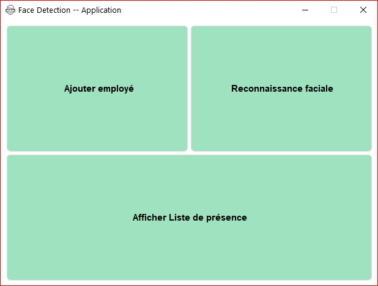
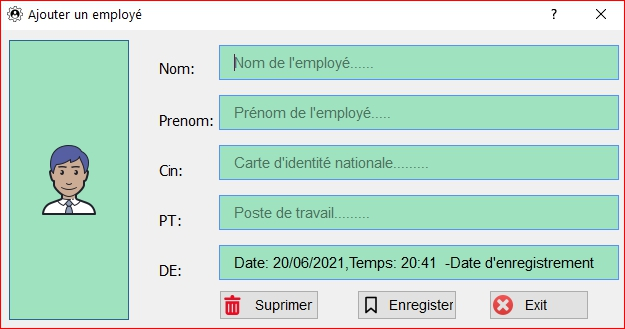
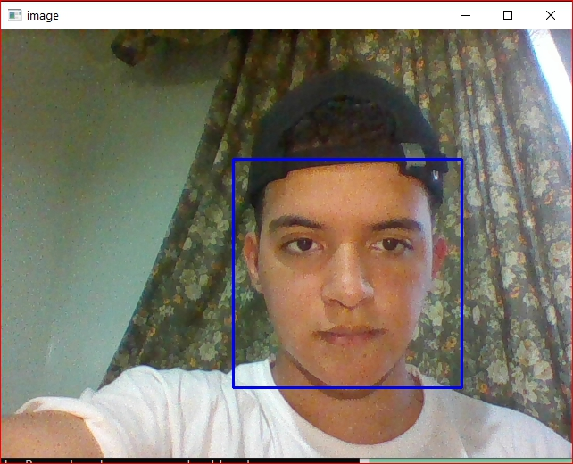
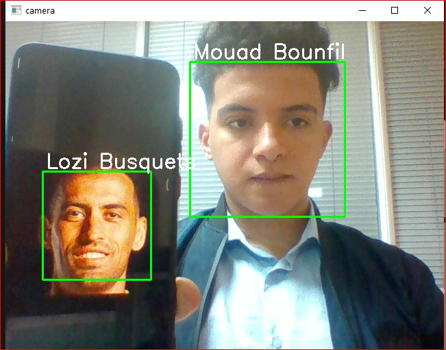
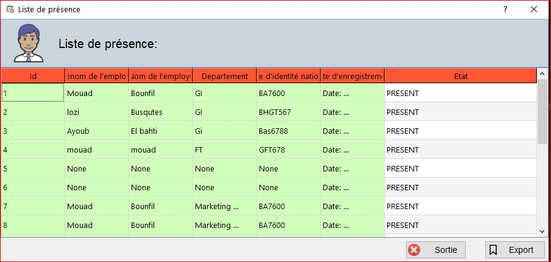

Objectif de la plateforme :
L’objectif de mon travail consiste à développer une application permettant la reconnaissance des visages des employés à partir d’une séquence vidéo. L’entrée de mon application est une séquence vidéo. La sortie est une liste des employés absents qui sera déterminée en comparant les caractéristiques des visages extraits de la base de données avec celle qui existe dans la séquence vidéo. Tout d’abord, on décompose la vidéo en un ensemble d’images. Ensuite, à partir de cet ensemble on cherche le meilleur choix qui correspond à l’image dans laquelle l’algorithme de recherche a détecté le maximum des objets morphologiques du visage (les deux yeux, le nez et la bouche) puis on calcule les distances caractéristiques et on les compare avec celles des images de la base de données afin d’obtenir un score de ressemblance, ce dernier on le compare à un seuil déjà fixé pour vérifier l’existence de la personne recherchée dans la base de données. Principe de fonctionnement de base d’un système de reconnaissance faciale L’application que je vais développer doit prendre en considération des besoins fournis en entrée. Dans ce qui suit, je vais déceler les différents besoins fonctionnels et non fonctionnels que mon application doit satisfaire.

Menu principale
Cette interface présente le menu principal de l’application

Ajout des employés
-Premièrement le superviseur va entrer l’id, le nom et le prénom et le CIN et le poste de travail et d’employés à ajouter puis l’employé va mettre son visage devant la caméra pour que l’application détectera son visage et ensuite elle va stocker cinquante photos dans la base de données

Reconnaissance faciale
Chaque employé va voir son visage encadré par un cadre avec son nom si il est reconnais par l’application si il n’est pas reconnais il va voir le mot « unknown» au lieu de son nom.

L’interface de consultation d’un client
Exemple d’une deux personne qui existe dans la base de données

Afficher Liste de présence (absence)
Si l’ employé n’a pas met son visage devant la caméra son nom va être enregistré dans la base de données des employés absents et ce bouton va l’afficher avec la date .

L’objectif de mon travail consiste à développer une application permettant la reconnaissance des visages des employés à partir d’une séquence vidéo. L’entrée de mon application est une séquence vidéo. La sortie est une liste des employés absents qui sera déterminée en comparant les caractéristiques des visages extraits de la base de données avec celle qui existe dans la séquence vidéo. Tout d’abord, on décompose la vidéo en un ensemble d’images. Ensuite, à partir de cet ensemble on cherche le meilleur choix qui correspond à l’image dans laquelle l’algorithme de recherche a détecté le maximum des objets morphologiques du visage (les deux yeux, le nez et la bouche) puis on calcule les distances caractéristiques et on les compare avec celles des images de la base de données afin d’obtenir un score de ressemblance, ce dernier on le compare à un seuil déjà fixé pour vérifier l’existence de la personne recherchée dans la base de données. Principe de fonctionnement de base d’un système de reconnaissance faciale L’application que je vais développer doit prendre en considération des besoins fournis en entrée. Dans ce qui suit, je vais déceler les différents besoins fonctionnels et non fonctionnels que mon application doit satisfaire.